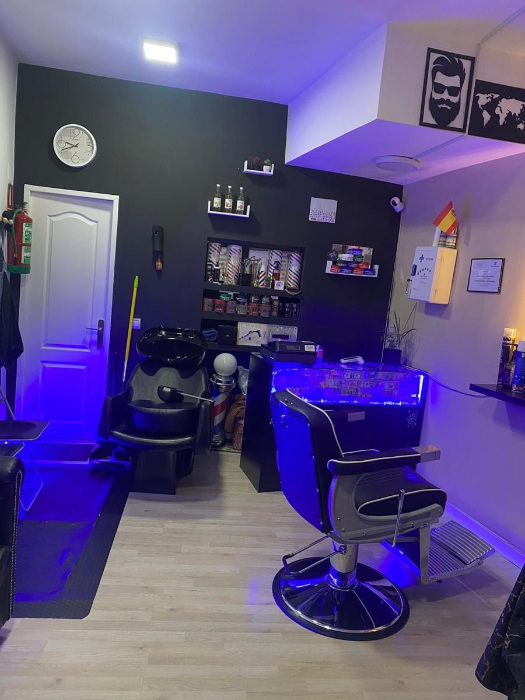
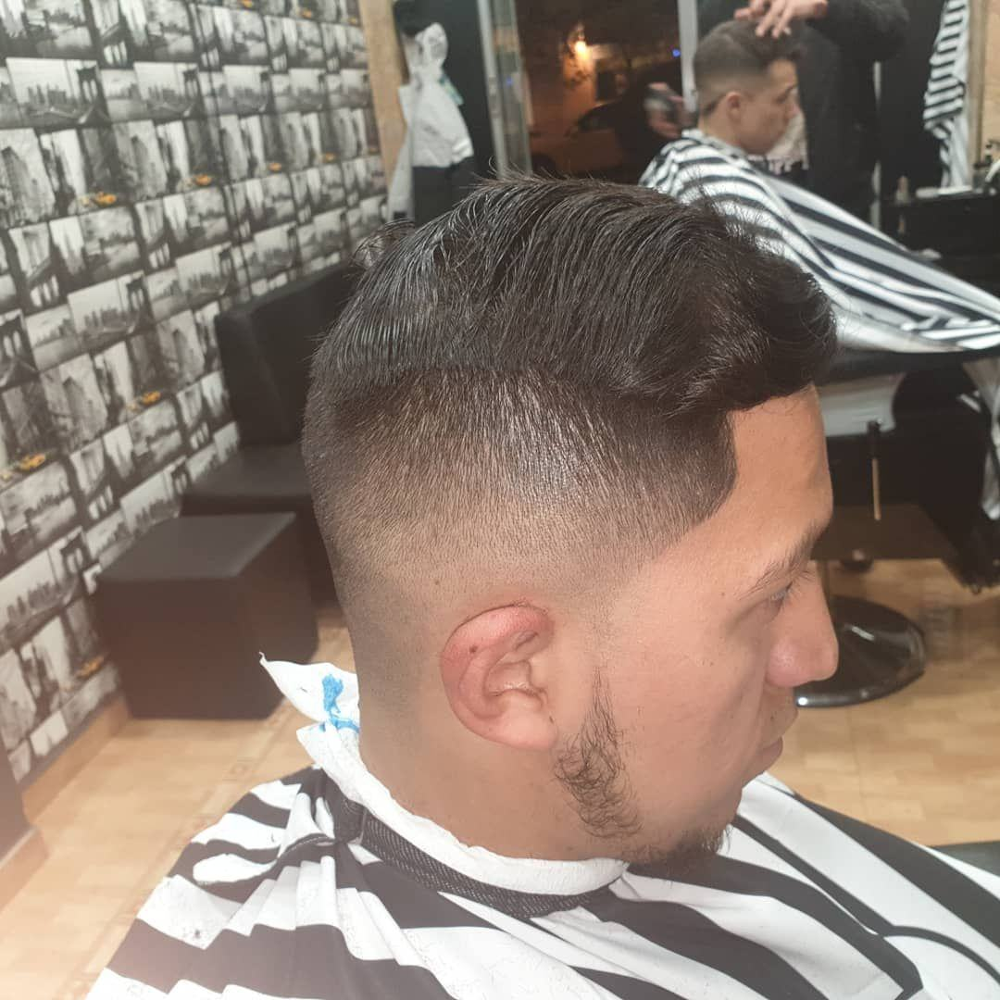
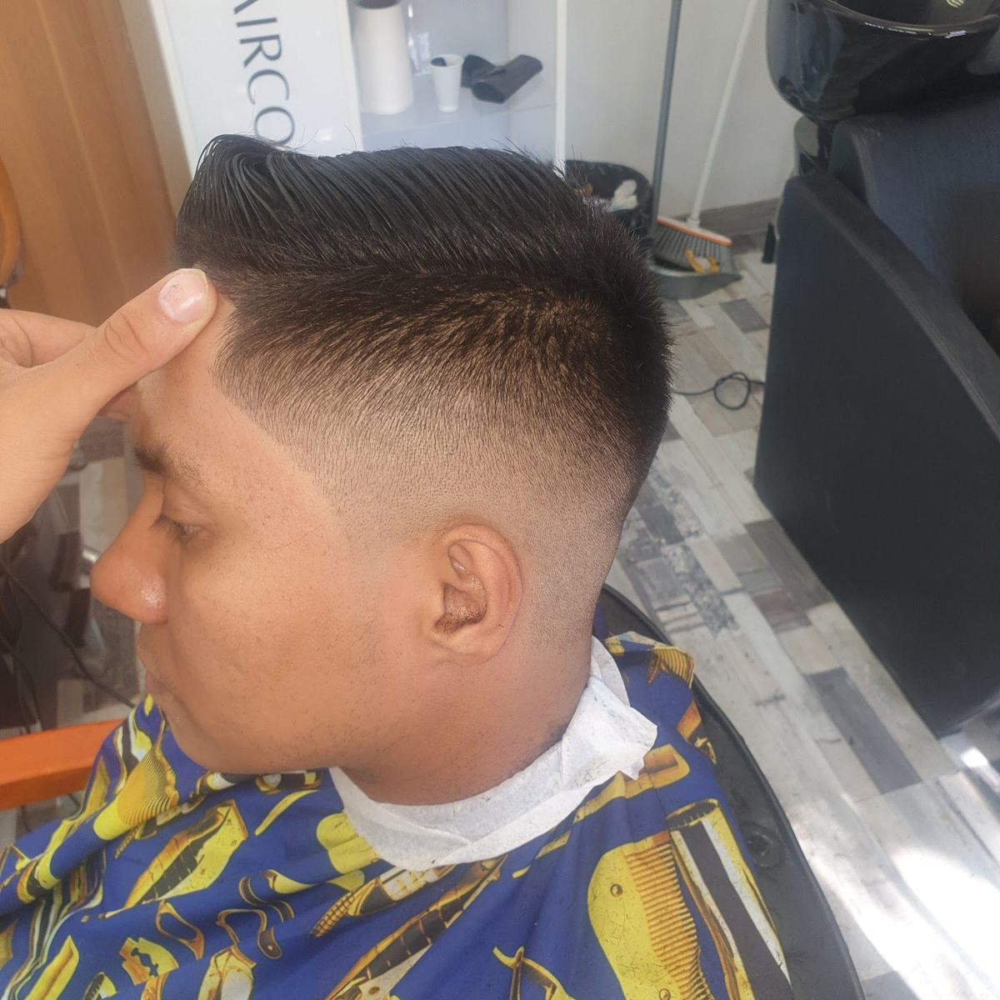
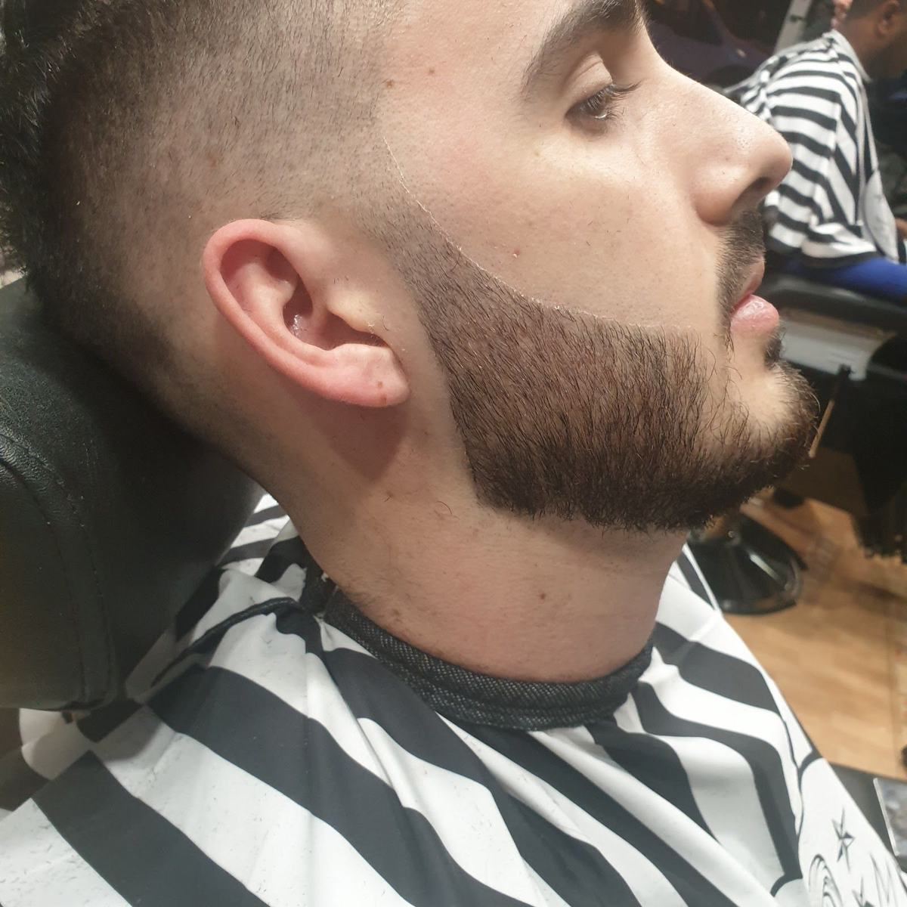
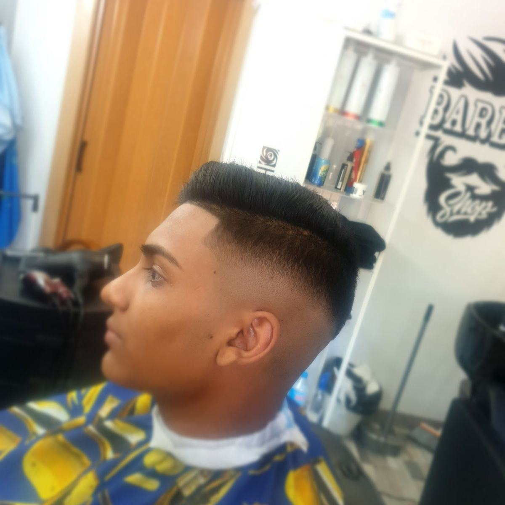
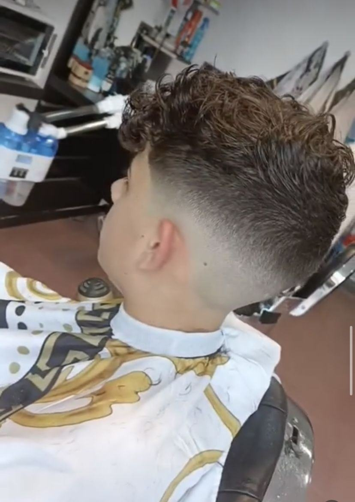
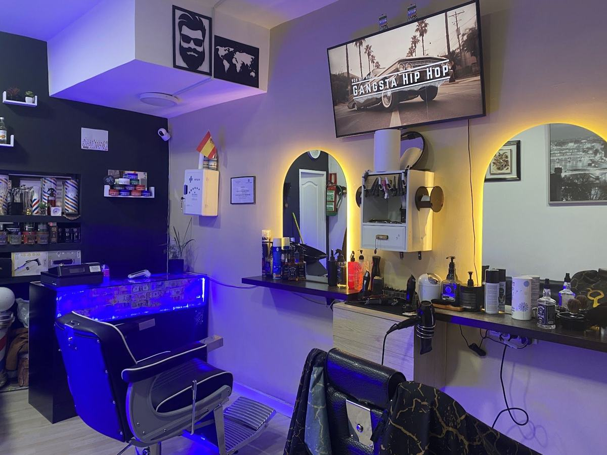
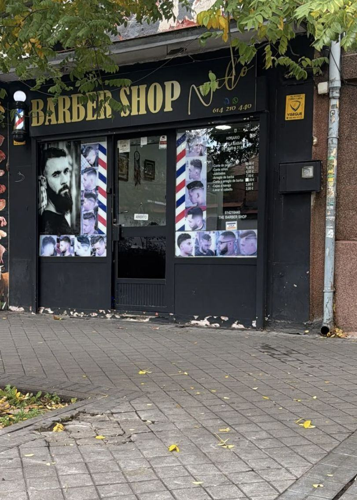

Avenida de Carabanchel Alto, 58. Luz morada, espejos dorados y un fade que brilla por sí solo. De lunes a sábado hasta las 21:00.
Pedir cita por WhatsApp







Av. de Carabanchel Alto, 58
Carabanchel, Madrid
| Lunes | 10:00–21:00 |
|---|---|
| Martes | 10:00–21:00 |
| Miércoles | 10:00–21:00 |
| Jueves | 10:00–21:00 |
| Viernes | 10:00–21:00 |
| Sábado | 10:00–21:00 |
| Domingo | Cerrado |